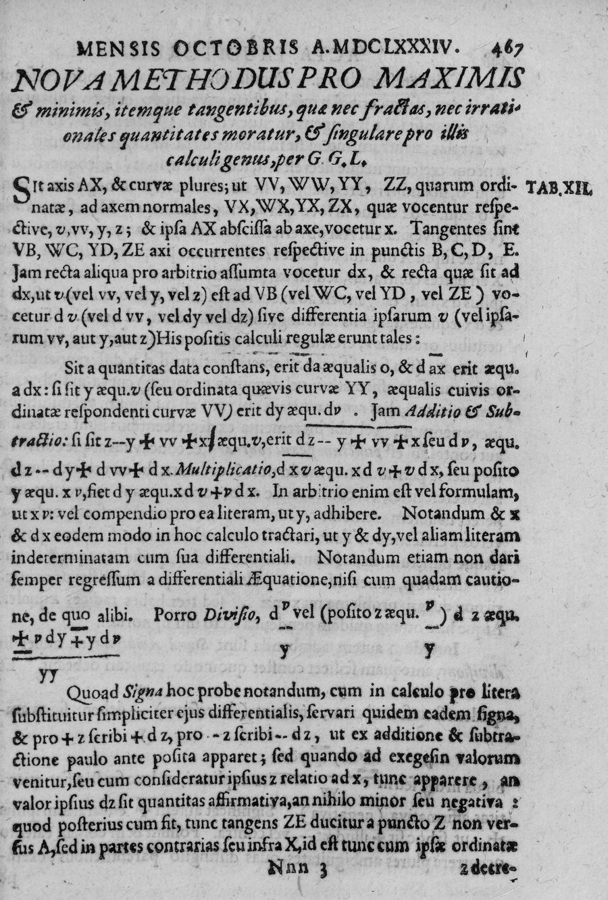
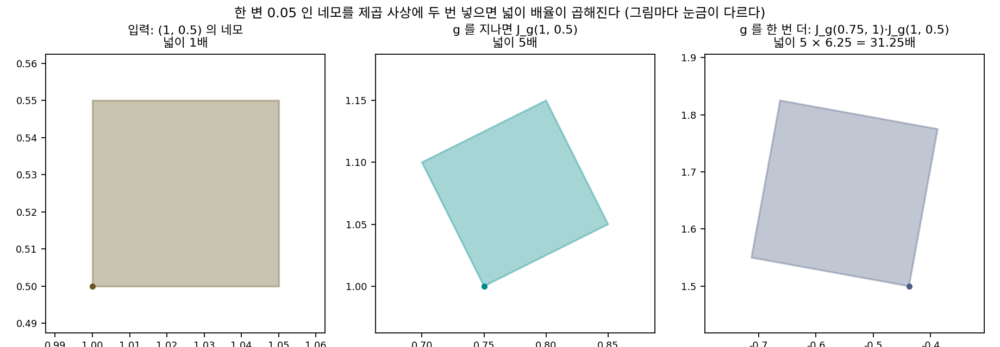
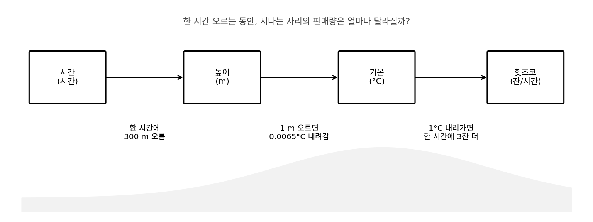
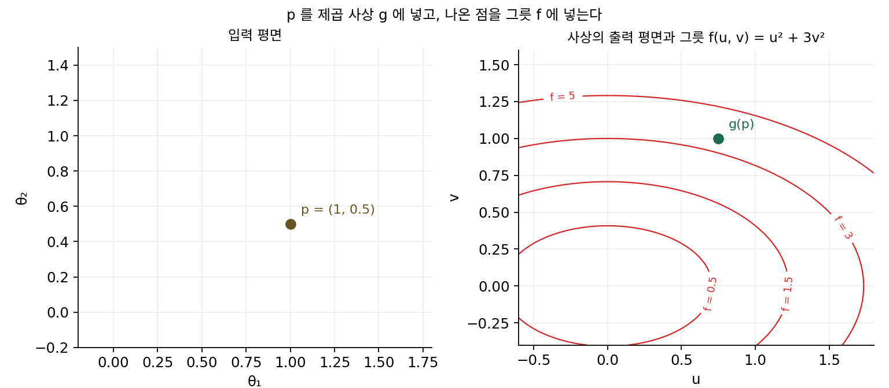
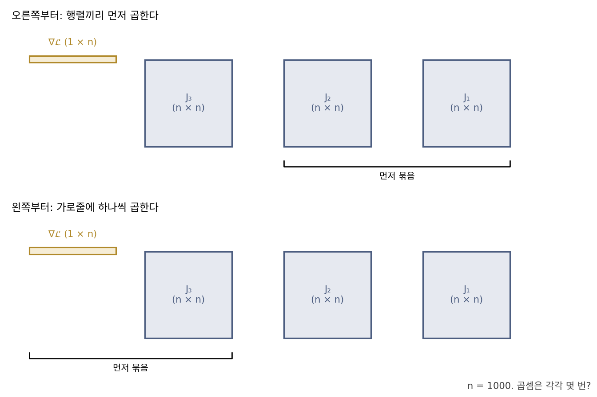

연쇄법칙: 자코비안을 곱한다
신경망은 층을 차례로 거치는 사상들의 연결이다. 입력이 첫 층을 지나 은닉 상태가 되고, 그것이 다음 층을 지나고, 맨 끝에서 손실 숫자 하나가 나온다. 층 하나의 자코비안은 그 층의 식만 보면 구할 수 있다는 것을 tanh 층에서 보았지만, 학습에 필요한 것은 맨 끝 손실을 맨 앞 파라미터로 미분한 그래디언트다. 층마다의 자코비안을 알면 전체의 그래디언트를 얻을 수 있을까, 얻을 수 있다면 어떻게 이어 붙여야 할까?
역사: 라이프니츠의 메모
합성 함수를 미분하는 규칙은 미적분의 시작과 거의 함께 나왔다. 고트프리트 빌헬름 라이프니츠(Gottfried Wilhelm Leibniz)는 1676년의 메모에서 √(a + bz + cz²)처럼 함수 안에 함수가 든 식을 미분하면서, 안쪽 식을 새 변수 하나로 놓고 바깥 함수의 미분과 안쪽 식의 미분을 곱하는 계산을 했다. 그 메모에는 부호 하나를 틀린 자리가 있었다고 전해진다. 1684년 그가 미분 계산을 처음 인쇄해 알린 논문 「극대와 극소를 위한 새로운 방법(Nova methodus pro maximis et minimis)」은 곱의 미분, 나눗셈의 미분 같은 규칙을 실었고, 함수 안에 함수가 든 식도 그 안에서 같은 방식으로 다뤘다고 전해진다. 라이프니츠가 만든 dy/dx 표기에서는 이 규칙이 dz/dx = (dz/dy)(dy/dx)처럼 분수를 약분하는 모양이 되어, 표기 자체가 규칙을 외우게 해 주었다. 변수가 여럿이 되면 이 곱은 숫자의 곱이 아니라 행렬의 곱이 되고, 약분처럼 보이던 모양은 「행렬의 줄과 칸 수가 맞아야 곱할 수 있다」는 조건으로 바뀐다.


바깥 미분에 안쪽 미분을 곱하는 거면 고등학교에서 배운 합성 함수 미분이에요. 라이프니츠가 메모에서 부호를 틀렸다니 좀 의외네요.

그때는 그 규칙을 정리해 둔 교과서가 없었어요. 메모 자체가 처음 해 보는 계산이었죠. 그럼 변수가 여럿일 때는 「곱한다」가 무엇을 곱하는 걸까요?

음, 편미분이 여러 개니까 숫자끼리가 아니라 편미분 표끼리 곱해야 할 것 같아요.

그런 표끼리 곱하는 규칙인 행렬의 곱셈을 하나의 계산으로 정리한 글은 아서 케일리(Arthur Cayley)의 1858년 논문이에요. 라이프니츠의 메모보다 180년쯤 뒤죠.

그러면 라이프니츠 시대에는 변수가 여럿인 연쇄법칙을 「표끼리 곱한다」고 한 줄로 적을 말 자체가 없었던 거네요.

표끼리 곱한다면, 어느 자리에서 잰 표를 어떤 순서로 곱해야 하죠? 그릇과 제곱 사상을 이어 붙여 숫자로 확인해 볼 수 있을까요?
그릇을 제곱 사상 뒤에 놓으면
연쇄법칙을 숫자로 확인하려면, 합성에 들어가는 두 함수를 이미 따로 다뤄 본 경우가 좋다. 그래서 제곱 사상 g(θ₁, θ₂) = (θ₁² − θ₂², 2θ₁θ₂)의 출력 (u, v)를 그릇 f(u, v) = u² + 3v²에 넣는 합성 f∘g를 보자. 입력 둘이 사상을 지나 둘이 되고, 그릇을 지나 숫자 하나가 되니, 입력 → 은닉층 → 손실로 이어지는 층 두 개짜리 신경망처럼 생겼다.
(1, 0.5)에서 출발하면 g를 지나 (0.75, 1)이 되고, 그릇의 높이는 0.75² + 3 × 1² = 3.5625다. 두 함수의 미분은 각자 받는 입력 자리에서 잰다. 제곱 사상의 자코비안은 (1, 0.5)에서 [[2, −1], [1, 2]]이고, 그릇의 그래디언트는 사상의 출력 자리 (0.75, 1)에서 (2 × 0.75, 6 × 1) = (1.5, 6)이다. 입력을 Δ만큼 움직이면 출력은 자코비안 곱하기 Δ만큼 움직이고, 그 출력의 움직임에 그릇의 그래디언트를 내적하면 높이의 변화가 나온다. 두 단계를 하나로 묶으면 (1.5, 6)을 가로줄로 놓고 자코비안을 오른쪽에 곱한 것이 합성의 그래디언트다.
(1.5, 6) × [[2, −1], [1, 2]] = (1.5 × 2 + 6 × 1, 1.5 × (−1) + 6 × 2) = (9, 10.5)
합성 함수를 처음부터 식으로 풀어 편미분을 수치로 구해도 (9, 10.5)가 나온다. 이 그래디언트로 (0.01, 0.01)만큼 움직일 때를 근사하면 높이 변화가 0.195이고, 실제는 0.19904다.
이처럼 합성 함수의 자코비안은 합성에 들어간 함수마다의 자코비안을 그 함수가 받는 입력 자리에서 재어 차례로 곱한 것이다. 이 규칙을 연쇄법칙 (자코비안을 차례로 곱하기 / chain rule)이라 한다. 출력이 숫자 하나인 마지막 함수의 자코비안은 그래디언트를 눕힌 한 줄이므로, 그래디언트로 적으면 앞 함수 자코비안의 전치(줄과 칸을 바꾼 행렬)를 곱하는 꼴이 된다.
곱의 순서와 재는 자리, 둘 다 중요하다. 행렬의 곱은 순서를 바꾸면 보통 다른 답이 나오고, 뒤 함수 f의 미분은 입력 점 p가 아니라 앞 함수 g를 지난 자리 g(p)에서 재야 한다.
자코비안이 넓이 배율을 정했으니, 연쇄법칙은 넓이 배율도 곱해진다고 말한다. 제곱 사상을 두 번 거쳐 보자. (1, 0.5)의 자코비안은 행렬식이 5였고, 한 번 지난 자리 (0.75, 1)의 자코비안은 [[1.5, −2], [2, 1.5]]로 행렬식이 6.25다. 둘을 곱한 [[1, −5.5], [5.5, 1]]의 행렬식은 5 × 6.25 = 31.25다. 한 변 0.01인 네모를 실제로 두 번 옮기면 넓이가 32.3962배가 되어 31.25에 다가간다(한 변 0.05면 37.4303배). 행렬식이 곱해지는 것은 행렬의 곱 det(AB) = det A · det B를 연쇄법칙에 적은 것이다.

ML에서: 층 자코비안의 곱과 파이토치
입력 2칸이 은닉층 3칸(tanh)을 지나 출력 2칸으로 나가는 작은 신경망을 씨앗 0으로 만들고 입력 (1, 0.5)를 넣어 보자. 첫 층의 자코비안은 3 × 2, 둘째 층(선형)의 자코비안은 그 가중치 행렬 2 × 3이다. 둘을 곱한 2 × 2 행렬은 [[0.1223, 0.1199], [0.2698, −0.0619]]이고, 파이토치의 torch.autograd.functional.jacobian으로 신경망 전체의 자코비안을 직접 구한 값과 넷째 자리까지 같다. 층이 몇 개든 신경망 전체의 자코비안은 층마다의 자코비안을 차례로 곱한 것이다.
그런데 loss.backward()는 이런 자코비안 행렬을 하나도 만들지 않는다. 파이토치 문서는 자동 미분이 하는 일을 「벡터와 자코비안의 곱」을 계산하는 것이라고 설명한다. 같은 신경망에서 가로줄 벡터 (1, −1)에 전체 자코비안을 곱하면 (−0.1475, 0.1818)인데, torch.autograd.functional.vjp가 자코비안 없이 내놓는 값도 똑같다. 왜 행렬을 다 만들지 않고 벡터부터 곱하는지는 아래 문제 12에서 곱셈 수를 세어 본다.
문제 10. 산을 오르면 핫초코가 몇 잔 더 팔릴까
등산객이 한 시간에 300 m씩 오른다. 높이가 1 m 오를 때마다 기온은 0.0065°C 내려가고, 산 위 매점에서는 기온이 1°C 내려갈 때마다 한 시간에 핫초코가 3잔 더 팔린다고 하자(설명을 위해 고른 값이다). 등산객이 한 시간 오르는 동안 그가 지나는 자리에서 한 시간에 팔리는 핫초코 잔 수는 얼마나 달라지는가?

변화율 셋을 다 더하면 되죠. 300 + (−0.0065) + 3… 296.99? 어, 단위가 m, °C, 잔이 섞였네요. 이상해요.
한 시간 오르면 기온이 얼마나 바뀌는지부터 구해 볼까요?
300 m × (−0.0065°C/m) = −1.95°C예요. 기온이 1°C 내려가면 3잔 더니까, 기온에 대한 판매의 변화율은 −3잔/°C이고 −1.95 × (−3) = 5.85잔이요. 더하는 게 아니라 곱하는 거네요. 단위도 m가 약분되고 °C가 약분돼서 잔/시간만 남아요.

라이프니츠 표기로 적으면 단위가 그대로 약분돼. (잔/°C) × (°C/m) × (m/시간). 변수가 하나씩이라 자코비안이 1 × 1 행렬이고, 행렬 곱이 그냥 숫자 곱이 된 거지.

환율 계산도 그렇네요. 원을 달러로, 달러를 엔으로 바꿀 때 환율을 곱하지 더하지는 않잖아요.
문제 11. 어디서 잰 그래디언트인가
합성 f∘g(g는 제곱 사상, f(u, v) = u² + 3v²)의 (1, 0.5)에서의 그래디언트를 두 학생이 구했다. 민준은 그릇의 그래디언트를 입력 점 (1, 0.5)에서 재서 Jᵀ에 곱했고, 서연은 그릇의 그래디언트는 바른 자리에서 쟀지만 J를 전치하지 않고 곱했다. (가) 두 사람이 얻은 값은? (나) 바른 값 (9, 10.5)와 견줘 각각 무엇이 틀렸는가? (다) 바른 값이 맞는지 확인할 방법은?

저는 그릇 그래디언트를 (1, 0.5)에서 재서 (2, 3)이 나왔고, Jᵀ(2, 3) = (2 × 2 + 1 × 3, −1 × 2 + 2 × 3) = (7, 4)예요. 그릇 식에 넣는 건 어차피 같은 점이잖아요.
나는 J(1.5, 6) = (2 × 1.5 − 1 × 6, 1 × 1.5 + 2 × 6) = (−3, 13.5). 2 × 2라 곱셈은 되니까 순서는 상관없다고 생각했어.
그릇이 받는 입력은 무엇이었죠? 그리고 바른 값은 어떻게 확인할 수 있을까요?

그릇은 (1, 0.5)가 아니라 사상을 지난 (0.75, 1)을 받아요. 저는 그릇이 실제로 있지 않은 자리의 경사를 잰 거네요. 확인은 합성 함수를 그대로 두고 편미분을 수치로 구하면 돼요. 돌려 보니 (9, 10.5)예요. 제 (7, 4)도, 서연이 (−3, 13.5)도 아니에요.

나는 곱셈이 된다는 것만 봤어. 그런데 왜 꼭 Jᵀ여야 하지?
그릇의 그래디언트는 어느 쪽 움직임에 대한 민감도였죠?
출력 쪽 움직임이요. 입력 쪽 민감도로 바꾸려면… 입력 하나가 출력 칸 여러 개를 움직이니까 출력 칸을 따라 더해야 해요. 그게 Jᵀ를 곱하는 거고, J를 그대로 곱하면 줄과 칸의 뜻이 뒤바뀐 덧셈이 돼요.
이번 사상은 입력도 출력도 둘이라 뒤바뀐 곱셈도 모양이 맞았어요. 입력 셋, 출력 둘이었다면요?

J가 2 × 3이고 그릇 그래디언트가 2칸이니까, J 곱하기 2칸은 아예 곱셈이 안 돼요. Jᵀ(3 × 2) 곱하기 2칸이어야 입력 수와 같은 3칸이 나와요. 줄과 칸 수를 맞춰 보는 것만으로 순서가 정해지는 거네요. 선형대수 숙제에서 행렬 크기부터 적어 보라고 하던 게 이래서였어요.

실험 보고서에서 측정값을 엉뚱한 날 온도로 보정했다가 조교님한테 지적받은 적이 있는데, 그거랑 같아요. 보정 공식은 맞아도 넣은 온도가 측정한 날의 온도가 아니면 다 틀려요. 그릇 그래디언트를 그릇이 실제로 받는 점에서 재야 하는 것과 같아요.
문제 12. 곱하는 순서와 곱셈 수
손실 하나에 이르는 층이 셋이고 각 층의 자코비안이 n × n(n = 1000)이다. 손실의 그래디언트는 1 × n 가로줄 ∇𝓛에 세 자코비안을 차례로 곱한 ∇𝓛 J₃ J₂ J₁이다. (가) 오른쪽부터 행렬끼리 먼저 곱할 때와, 왼쪽부터 가로줄에 하나씩 곱할 때 곱셈은 각각 몇 번인가? (n × n 행렬끼리의 곱은 n³번, 1 × n 줄과 n × n 행렬의 곱은 n²번으로 센다.) (나) 층이 100개면?

자코비안들을 먼저 곱해서 전체 자코비안을 만들어 두면 깔끔하잖아요. 나중에 다른 손실에도 쓸 수 있고요.
곱셈 수를 세어 봅시다.
오른쪽부터면 행렬끼리 두 번 곱하는 데 2n³, 마지막에 줄을 곱하는 데 n²이라 20억 100만 번이에요. 왼쪽부터면 줄에 행렬을 곱할 때마다 결과가 다시 1 × n 줄이니까 n²씩 세 번, 300만 번이고요. 667배 차이예요.
층이 100개면 왼쪽부터는 1억 번, 오른쪽부터는 990억 100만 번이야. 왼쪽부터 곱하면 도중에 들고 다니는 게 늘 n칸짜리 줄 하나라서 그래.

그런데 왼쪽 끝 ∇𝓛은 손실 쪽, 곧 신경망의 맨 끝에 있어요. 계산은 어느 쪽에서 시작하게 되죠?
출력 쪽에서 시작해 입력 쪽으로 거꾸로 가요. 그래서 파이토치가 자코비안을 만들지 않고 「벡터 곱하기 자코비안」만 계산한다고 했던 거네요. 들고 가는 벡터가 끝에서 앞으로 한 층씩 넘어가는 거고요.
전체 자코비안을 만들어 두면 손실이 숫자 하나인데도 n × n짜리 큰 표를 힘들게 채우는 거네요. 조별 과제에서 결론 한 줄이 필요한데 모든 조원의 메모를 표 하나로 다 합친 다음에 읽는 것보다, 마지막 사람부터 요약을 한 줄씩 넘겨받는 게 빠른 거랑 같아요.